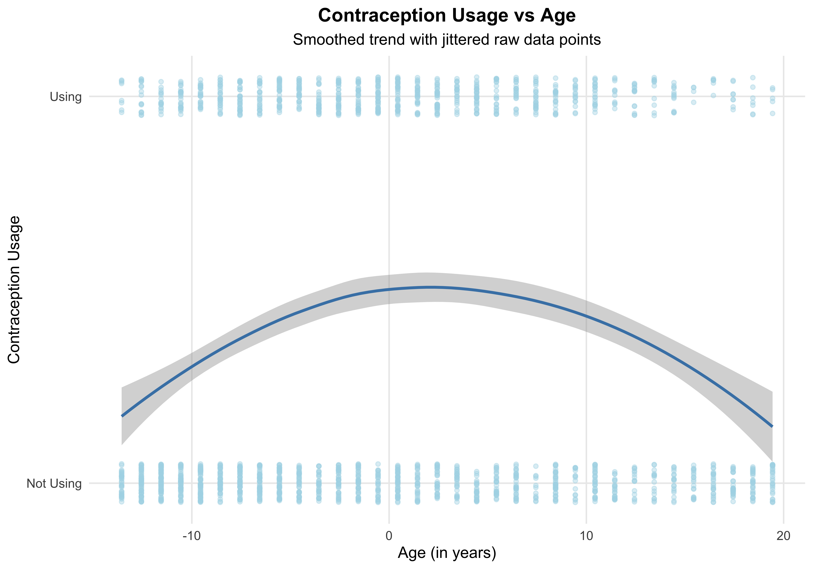
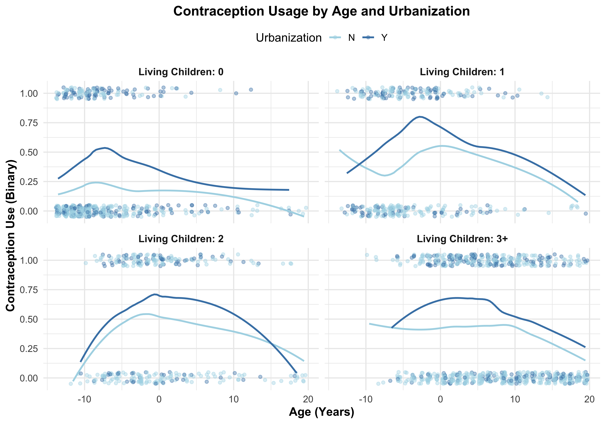
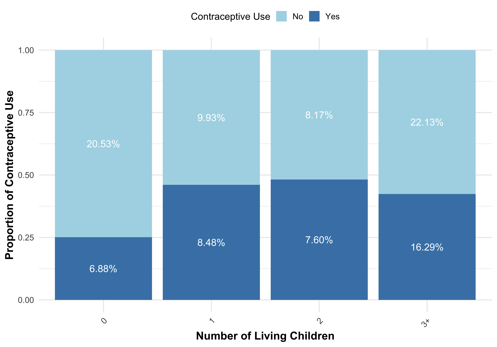
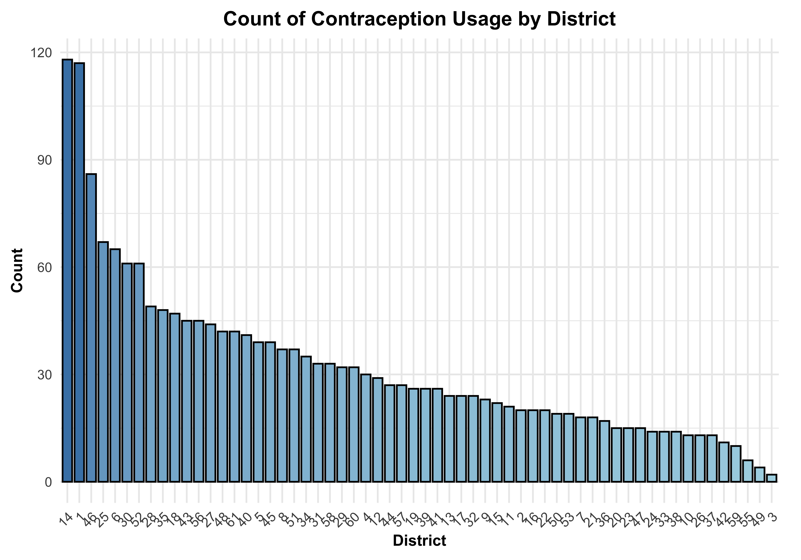
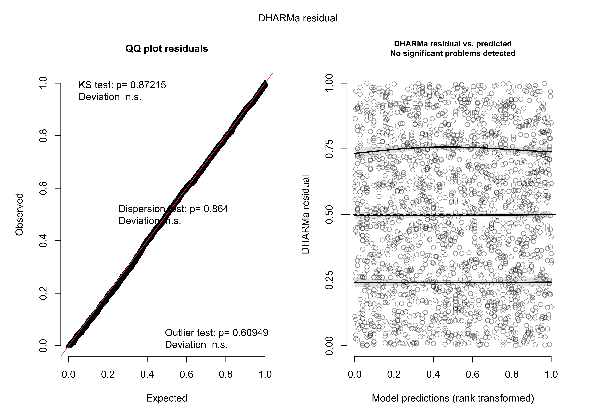
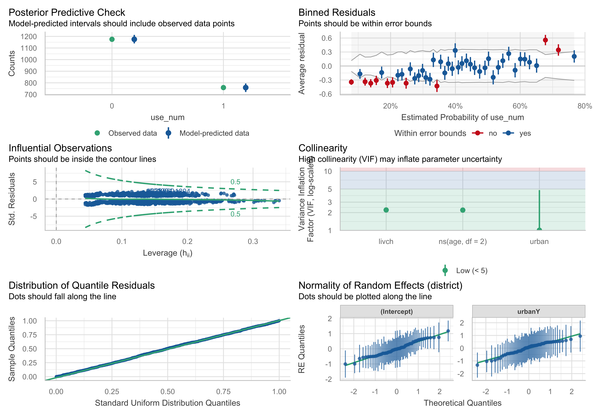
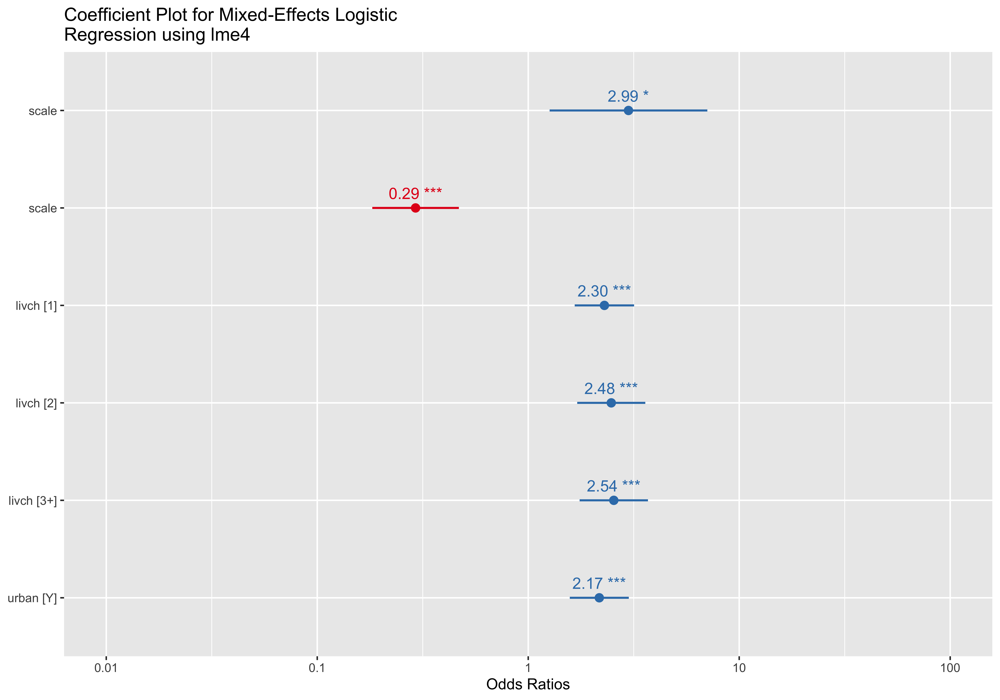
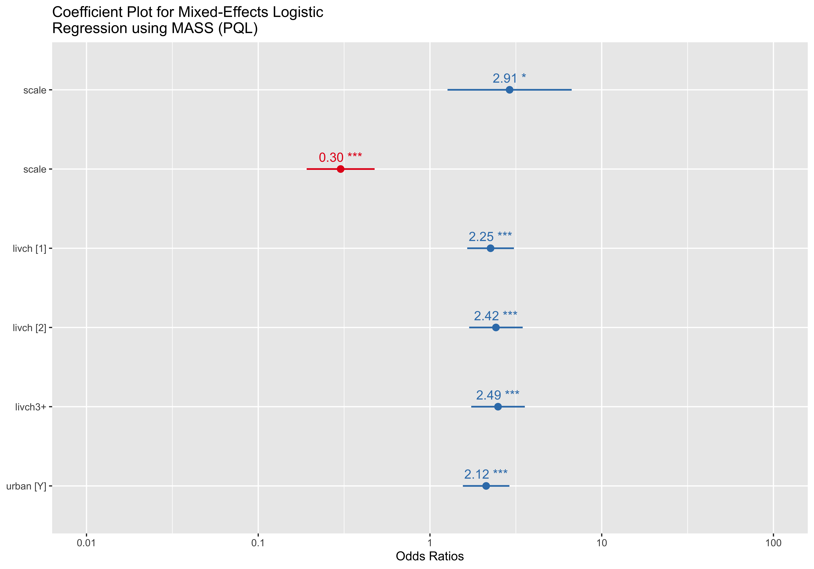
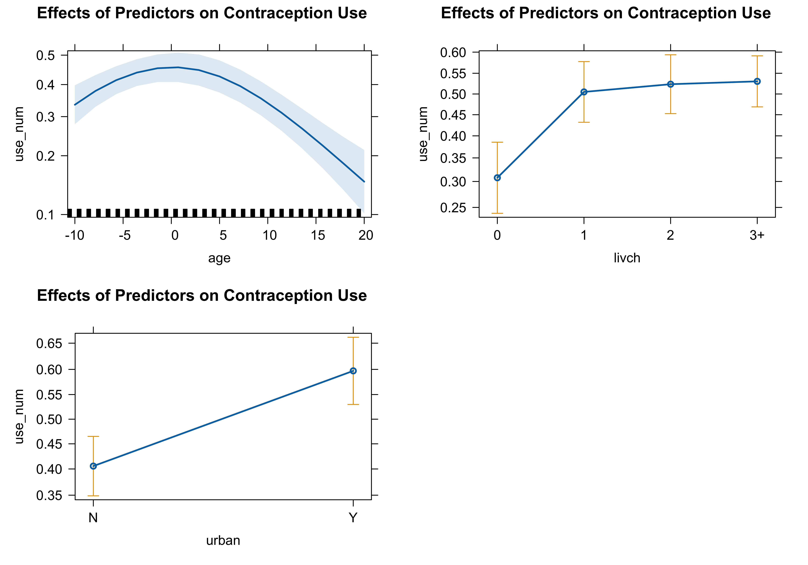
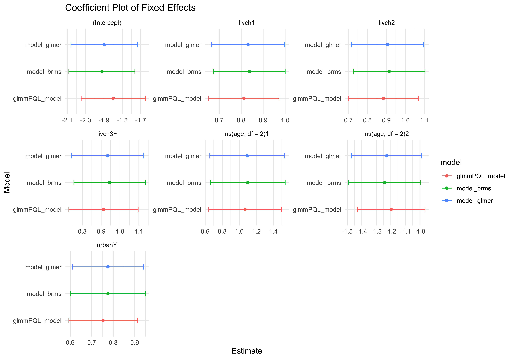

woman district use livch age urban use_num
1 1 1 N 3+ 18.4400 Y 0
2 2 1 N 0 -5.5599 Y 0
3 3 1 N 2 1.4400 Y 0
4 4 1 N 3+ 8.4400 Y 0
5 5 1 N 0 -13.5590 Y 0
6 6 1 N 0 -11.5600 Y 0Project 5
Analysis of Contraception Data from the Package mlmRev Using Generalized Mixed Models
This study investigates the hierarchical effects and determinants of contraceptive use in urban and rural Bangladesh, leveraging data from the 1989 Bangladesh Fertility Survey (BFS). A total of 11,905 ever-married women of reproductive age (10–49 years) were surveyed across urban and rural settings. The primary objective was to explore the demographic, socio-economic, cultural, and decision-making factors influencing contraceptive use, while accounting for the nested structure of the data through multilevel logistic regression modeling. Women were grouped within census blocks, which were further nested within regions, enabling the study to examine both individual-level and contextual determinants.
Key findings from the original study highlight significant insights into contraceptive use patterns. Factors positively associated with contraceptive use included higher parity, women’s education, female independence scores, and joint family planning decisions, underscoring the importance of education and autonomy in reproductive health choices. Conversely, child mortality exhibited a significant negative influence, as experiences of child loss deterred contraceptive adoption. Urban-rural differences revealed notable disparities: urban women reported higher education, independence, and contraceptive use, while rural women experienced higher child mortality and lower autonomy and educational attainment. Hierarchical variation at the block level emphasized localized disparities in access to family planning resources and socio-cultural influences, particularly in remote rural areas. Interestingly, while religion and women’s work experience were found to have limited influence overall, younger rural women showed a positive association between work status and contraceptive use.
The current dataset, while a subset of the original BFS data, offers an opportunity to revisit these questions and refine our understanding of contraceptive use dynamics in Bangladesh. By analyzing the data through a similar multilevel framework, we aim to replicate and extend the findings, examining whether the determinants and hierarchical variations observed in the original study persist. This analysis will help to validate previous conclusions and provide updated insights into the interplay of socio-economic, demographic, and cultural factors shaping contraceptive use across urban and rural settings (in a much shorter scale as we have much less data and variables).
Data Visualization
Before specifying the modeling process, it is essential to visually explore the data to gain valuable insights into its structure, relationships, and patterns. Graphical representations allow for an intuitive understanding of the data’s key features, enabling informed decisions about the modeling strategy, potential transformations, and variable selection. This step provides a foundation for identifying trends, outliers, and potential interactions, which are crucial for constructing effective and interpretable models.
ggplot(Contraception, aes(x = age, y = use_num)) +
geom_jitter(
height = 0.05, width = 0, alpha = 0.4, size = 1.5, color = "lightblue"
) +
geom_smooth(
method = "loess", color = "steelblue", se = TRUE, linewidth = 1.2, span = 0.8, formula = 'y~x'
) +
scale_y_continuous(
breaks = c(0, 1),
labels = c("Not Using", "Using")
) +
labs(
title = "Contraception Usage vs Age",
subtitle = "Smoothed trend with jittered raw data points",
x = "Age (in years)",
y = "Contraception Usage"
) +
theme_minimal(base_size = 14) +
theme(
plot.title = element_text(face = "bold", hjust = 0.5),
plot.subtitle = element_text(hjust = 0.5),
panel.grid.minor = element_blank()
)
The relationship between age and contraception usage exhibits a clear non-linear trend, as shown in the graph. Contraception usage increases with age during younger adulthood, peaks at mid-range ages, and then declines in older age, forming a curved pattern. This suggests that individuals in middle age are more likely to use contraception compared to younger or older individuals. The jittered raw data points highlight the binary nature of the response (“Using” vs. “Not Using”), with more individuals in the “Not Using” category at both age extremes. The shaded confidence interval around the smoothed trend line reflects greater variability at the younger and older ends of the age spectrum, reinforcing the need for targeted analysis when considering age-related contraception usage trends.
ggplot(Contraception, aes(x = age, y = use_num, color = urban)) +
geom_jitter(alpha = 0.4, width = 0.3, height = 0.05, size = 1.5) +
geom_smooth(method = "loess", se = FALSE, linetype = "solid", size = 1) +
facet_wrap(~ livch, labeller = labeller(livch = function(x) paste("Living Children:", x))) +
scale_color_manual(values = c("lightblue", "steelblue")) +
theme_minimal(base_size = 14) +
theme(
plot.title = element_text(face = "bold", size = 16, hjust = 0.5),
axis.title = element_text(face = "bold"),
strip.text = element_text(size = 12, face = "bold"),
legend.position = "top"
) +
labs(
title = "Contraception Usage by Age and Urbanization",
x = "Age (Years)",
y = "Contraception Use (Binary)",
color = "Urbanization"
)
The relationship between age and contraception usage shows a distinct non-linear trend, moderated by both the number of living children and urbanization. In all panels, contraception usage increases with age, peaks, and declines in later years, forming a curved pattern. This trend is more pronounced in individuals with more living children, particularly those with 2 or 3+ children, where usage reaches higher probabilities. Urban residents (“Y”) consistently report higher contraception usage compared to their rural counterparts (“N”) across all age groups, though the gap is most noticeable among those with fewer children. The relationship remains weakest and flattest for individuals with no children, highlighting how both urbanization and family size influence the likelihood of contraception use over the life course.
# Assuming Contraception is a data frame and livch is a numeric variable.
ggplot(Contraception, aes(x = factor(livch))) +
geom_bar(aes(fill = factor(livch)), width = 0.7) +
scale_fill_manual(values = c("steelblue", "lightblue", "skyblue", "lightsteelblue", "deepskyblue")) + # Customize colors close to steelblue and lightblue
labs(
title = "Number of Living Children by Contraception Usage",
x = "Number of Living Children",
y = "Count of Individuals",
fill = "Living Children" # Customize legend title
) +
theme_minimal() +
theme(
axis.text.x = element_text(angle = 45, hjust = 1), # Rotate x-axis labels if needed
plot.title = element_text(hjust = 0.5)
) +
geom_text(stat = 'count', aes(label = ..count..), vjust = -0.5) # Display count on top of bars
The bar chart illustrates the distribution of individuals based on the number of living children, categorized into four groups: 0, 1, 2, and 3 or more children. The data indicates that the majority of individuals fall within the “3+” category, comprising 743 individuals, followed by the “0” group with 530 individuals. The categories “1” and “2” are comparatively smaller, containing 356 and 305 individuals, respectively. The counts for each group are clearly labeled, and the chart uses a gradient of blues to differentiate the categories, with darker shades representing fewer children. The visualization effectively highlights the prevalence of individuals with three or more living children in this dataset.
create_bar_plot <- function(data, x_var, x_label) {
ggplot(data, aes(x = .data[[x_var]], fill = factor(use_num))) +
geom_bar(position = "fill", show.legend = TRUE) +
labs(
x = x_label,
y = "Proportion of Contraceptive Use",
fill = "Contraceptive Use"
) +
scale_fill_manual(
values = c("0" = "lightblue", "1" = "steelblue"),
labels = c("No", "Yes")
) +
theme_minimal(base_size = 15) + # Larger base size for better readability
theme(
legend.position = "top",
axis.text.x = element_text(angle = 45, hjust = 1), # Rotate x-axis labels if needed
axis.title.x = element_text(size = 16, face = "bold"), # Bigger and bolder x-title
axis.title.y = element_text(size = 16, face = "bold"), # Bigger and bolder y-title
legend.title = element_text(size = 14),
legend.text = element_text(size = 12)
) +
geom_text(
aes(label = scales::percent(..count.. / sum(..count..))),
stat = "count",
position = position_fill(vjust = 0.5), # Position the text in the middle of the bars
size = 5, color = "white" # White text for contrast
)
}
## CONTRACEPTION VS LIVING CHILDREN BAR PLOT
create_bar_plot(Contraception, "livch", "Number of Living Children")
The plot is a stacked bar chart illustrating the proportion of contraceptive use (Yes vs. No) across categories of the number of living children (0, 1, 2, and 3+). Contraceptive use increases notably as the number of living children rises. For instance, in the 3+ children category, approximately 16.29% of individuals report contraceptive use, compared to 6.88% in the childless group. The trend indicates a positive association between the number of living children and the likelihood of contraceptive use, suggesting that family size may influence contraceptive decisions.
create_box_plot <- function(data) {
boxplot(age ~ use_num,
data = data,
xlab = "Contraceptive Use (0 = Non-Users, 1 = Users)",
ylab = "Age (Centered)",
main = "Age Distribution by Contraceptive Use",
col = c("lightblue", "steelblue"),
border = "black",
notch = TRUE,
outline = TRUE,
horizontal = FALSE,
las = 1, # Horizontal x-axis labels
cex.main = 1.5, # Larger title
cex.lab = 1.2, # Larger axis labels
cex.axis = 1.1, # Larger axis ticks
boxwex = 0.4, # Adjust box width
whisklty = 1, # Solid whiskers
whiskcol = "black") # Black whiskers
# Add median line for clarity
abline(h = median(data$age), col = "red", lwd = 2, lty = 2) # Red dashed line for median
# Add mean points for comparison
points(1:2, tapply(data$age, data$use_num, mean), pch = 19, col = "black") # Mean points
# Add grid for easier comparison
grid(nx = NULL, ny = NULL, col = "gray", lty = "dotted")
}
# Create the box plot for age distribution
create_box_plot(Contraception)
The first plot presents a boxplot comparing the centered age distribution between contraceptive users (coded as 1) and non-users (coded as 0). Both groups have similar median ages (approximately centered at zero), with a slight variation in spread. Non-users exhibit a broader interquartile range and greater variability, whereas contraceptive users show a more compact age range. The black dots indicate mean values, which are nearly identical for both groups. This suggests that age, while centered here, does not show a significant difference in distribution between the two categories of contraceptive use, except the heavier tails for non-users.
Contraception %>%
count(district) %>%
ggplot(aes(x = reorder(district, -n), y = n, fill = n)) + # Map 'n' to 'fill' for color gradient
geom_bar(stat = "identity", color = "black", width = 0.8) +
scale_fill_gradient(low = "lightblue", high = "steelblue") + # Gradient from light to dark blue
theme_minimal(base_size = 16) +
theme(
axis.text.x = element_text(angle = 45, hjust = 1, size = 12), # Larger text for better readability
axis.text.y = element_text(size = 12),
axis.title = element_text(face = "bold", size = 14),
plot.title = element_text(face = "bold", size = 18, hjust = 0.5),
legend.position = "none", # Hide the legend
plot.margin = margin(10, 20, 10, 10) # Add margin for better spacing
) +
labs(
title = "Count of Contraception Usage by District",
x = "District",
y = "Count"
)
The bar chart depicts the count of contraception usage across various districts, arranged in descending order of usage frequency. The data reveals significant variability among districts, with the highest count exceeding 120 and gradually declining across the districts. The distribution demonstrates a few districts with notably high counts of contraception usage, while the majority show moderate to low levels. The chart employs a gradient of blue shades to represent the counts, enhancing the visual differentiation between districts. This visualization highlights the disparities in contraception usage across districts, suggesting potential regional differences in adoption or access.
Modeling Strategy
According to Harrell’s guidelines [@harrell] and given the current sample size, we are able to include the full number of predictor variables in the model. My approach involves a Generalized Linear Mixed Model (GLMM) with a binomial family and a logit link function (I decided to use logit link as it is easily interpretable). This model is appropriate given the binary nature of the response variable, use_num, essentially the proposed model is a logistic regression model with random effects for the variable “district” with the intercept and “urban” varying across each “district.”
The conditional distribution for use_num given the covariates and random effects is:
\[ Y_i \mid \mathbf{x}_i, u_i \sim \text{Bernoulli}\left(\frac{1}{1 + \exp(-\eta_i)}\right) \]
where \(\eta_i\) is the linear predictor for individual \(i\), incorporating both the fixed effects and the random effects for the district.
Fixed Effects
Centered Age of Women (
age): The first predictor is the centered age of women (using a spline for capturing the non-linear relationship of the variableage). It is hypothesized that the relationship between age and contraception use follows an inverted U-shape, with both younger and older women using contraception less frequently than those in middle age. This makes age an important predictor in the model.Number of Living Children (
livch): The second predictor is the number of living children. It is expected that as individuals establish stable partnerships and have children, the need for contraception may decrease. Therefore, the number of children is anticipated to influence contraception usage, justifying its inclusion as a predictor in the model.Type of Residence (
urban): The third predictor is the type of residence, which is categorized as either urban or rural. Contraception use is often linked to socio-economic factors, and urban areas tend to be wealthier and offer better educational opportunities. Higher education levels are generally associated with increased contraception use[@CanadianContraceptionConsensusChapter1ContraceptioninCanada], suggesting that the type of residence could significantly impact contraception behavior.
In this analysis, the maximal model for our problem includes random intercepts and random slopes for the urban variable, which varies across 60 districts (groups). If convergence issues or singularity problems arise, a stepwise reduction of the model will be employed, initially by removing the random slope for each urban variable. Further model modifications will be discussed if necessary based on subsequent challenges.
For the integration of the random effects, both the Laplace approximation and the Penalized Quasi-Likelihood (PQL) approximation will be utilized. Given that the random effects in this model are not particularly complex, both methods are expected to provide reliable, fast, and accurate results. The PQL approximation, in particular, is known for offering relatively better approximations for model withm complex random effect when the laplace approximation method struggles (but it is a bit slower), and both techniques will be applied for completeness.
To implement the model, I will use three packages: lme4, MASS, and brms. The lme4 package provides the glmer() function, a frequentist approach for fitting generalized linear mixed models (GLMMs). It uses the Laplace approximation, which is computationally efficient and reliable for fitting models with complex random effects structures. The advantage of using lme4 lies in its ability to handle large datasets with high dimensionality and its robustness in estimating fixed and random effects, making it an excellent choice for models with multiple predictors and random effects structures. The MASS package provides the glmmPQL() function, which is a frequentist method based on the penalized quasi-likelihood (PQL) approximation. This approach is suitable for models with non-Gaussian responses and is particularly effective when random effects have complex structures. Although less commonly used today, it remains a viable option when alternative methods, such as Laplace approximation, struggle with convergence or performance, especially in smaller datasets or when there are numerous levels of grouping factors.
The brms package is a Bayesian framework that fits GLMMs using Hamiltonian Monte Carlo (HMC) through Stan. This package is chosen for its flexibility in specifying complex prior distributions and its ability to provide full posterior distributions of model parameters, allowing for more nuanced inferences compared to frequentist methods. brms allows for detailed prior specification, which is important for this model, as I plan to use a combination of flat, uninformative priors for fixed effects (b), such as b (default) for livch1, livch2, livch3P, nsagedfEQ21, nsagedfEQ22, and urbanY. For the intercept, I will use a half-student-t(3, 0, 2.5) prior, as it offers heavier tails, which is beneficial in accommodating outliers or influential data points without overly constraining the model. For the random effects, I will use a half-Cauchy(0, 2.5) prior for the standard deviations (sd) of random effects, including district and intercept district, as well as the LKJ(1) prior for the correlation structure of the random effects. The half-Cauchy(0, 2.5) prior is a common choice for random effect standard deviations in hierarchical models, as it allows for flexibility while avoiding excessive shrinkage of the random effects variance. The LKJ(1) prior is used to model the correlation structure among the random effects and encourages weak correlations among random effects, which is a sensible assumption in many applied settings.
Together, these three packages provide a comprehensive suite for fitting GLMMs from both frequentist and Bayesian perspectives. lme4 offers a robust frequentist approach, MASS provides an alternative for complex random effects structures, and brms offers Bayesian modeling with flexible prior specifications. This combination of methods ensures a thorough comparison between frequentist and Bayesian approaches, each of which has distinct advantages depending on the nature of the data and the model.
Model Fit
## Model 1: glmmTMB
model_glmer <- glmer(use_num ~
ns(age,df=2) + livch + urban + (1+urban|district),
data = Contraception,
family = binomial(link = "logit"))
# Model 2: glmmPQL
glmmPQL_model <- MASS::glmmPQL(use_num ~
ns(age,df=2) + livch + urban, random = ~ 1+
urban|district,family = binomial, data =
Contraception)
# Model 3: Bayesian Model
# Define half-Cauchy priors
priors <- c(
prior(cauchy(0, 2.5), class = "sd"), # Half-Cauchy for random effect SDs
prior(cauchy(0, 2.5), class = "sd", group = "district"), # Specific to district random effects
prior(cauchy(0, 2.5), class = "sd", coef = "urbanY", group = "district") # Specific slope
)
# Update the model with new priors
model_brms <- brm(
use_num ~ ns(age, df = 2) + livch + urban + (1 + urban | district),
family = bernoulli(),
data = Contraception,
prior = priors
)
# prior_summary(model_brms)Generalized linear mixed model fit by maximum likelihood (Laplace
Approximation) [glmerMod]
Family: binomial ( logit )
Formula: use_num ~ ns(age, df = 2) + livch + urban + (1 + urban | district)
Data: Contraception
AIC BIC logLik -2*log(L) df.resid
2381.6 2437.3 -1180.8 2361.6 1924
Scaled residuals:
Min 1Q Median 3Q Max
-1.9469 -0.7436 -0.4449 0.9012 3.0816
Random effects:
Groups Name Variance Std.Dev. Corr
district (Intercept) 0.3874 0.6224
urbanY 0.5469 0.7395 -0.79
Number of obs: 1934, groups: district, 60
Fixed effects:
Estimate Std. Error z value Pr(>|z|)
(Intercept) -1.8991 0.1808 -10.503 < 2e-16 ***
ns(age, df = 2)1 1.0942 0.4392 2.491 0.0127 *
ns(age, df = 2)2 -1.2294 0.2411 -5.099 3.41e-07 ***
livch1 0.8314 0.1654 5.026 5.00e-07 ***
livch2 0.9063 0.1896 4.781 1.75e-06 ***
livch3+ 0.9338 0.1903 4.907 9.25e-07 ***
urbanY 0.7756 0.1643 4.720 2.36e-06 ***
---
Signif. codes: 0 '***' 0.001 '**' 0.01 '*' 0.05 '.' 0.1 ' ' 1
Correlation of Fixed Effects:
(Intr) n(,d=2)1 n(,d=2)2 livch1 livch2 lvch3+
ns(g,df=2)1 -0.567
ns(g,df=2)2 -0.040 0.330
livch1 -0.217 -0.312 -0.065
livch2 -0.081 -0.493 -0.162 0.526
livch3+ -0.026 -0.655 -0.449 0.565 0.651
urbanY -0.384 -0.045 -0.029 0.051 0.076 0.076Linear mixed-effects model fit by maximum likelihood
Data: Contraception
AIC BIC logLik
NA NA NA
Random effects:
Formula: ~1 + urban | district
Structure: General positive-definite, Log-Cholesky parametrization
StdDev Corr
(Intercept) 0.6127317 (Intr)
urbanY 0.7392394 -0.788
Residual 0.9755972
Variance function:
Structure: fixed weights
Formula: ~invwt
Fixed effects: use_num ~ ns(age, df = 2) + livch + urban
Value Std.Error DF t-value p-value
(Intercept) -1.8499396 0.1745571 1868 -10.597905 0.0000
ns(age, df = 2)1 1.0675016 0.4251999 1868 2.510588 0.0121
ns(age, df = 2)2 -1.1977196 0.2326712 1868 -5.147693 0.0000
livch1 0.8124300 0.1598835 1868 5.081386 0.0000
livch2 0.8843755 0.1832614 1868 4.825760 0.0000
livch3+ 0.9124638 0.1835004 1868 4.972544 0.0000
urbanY 0.7529924 0.1593175 1868 4.726363 0.0000
Correlation:
(Intr) n(,d=2)1 n(,d=2)2 livch1 livch2 lvch3+
ns(age, df = 2)1 -0.569
ns(age, df = 2)2 -0.050 0.332
livch1 -0.215 -0.312 -0.063
livch2 -0.077 -0.493 -0.159 0.527
livch3+ -0.017 -0.658 -0.445 0.565 0.651
urbanY -0.393 -0.042 -0.031 0.047 0.077 0.075
Standardized Within-Group Residuals:
Min Q1 Med Q3 Max
-1.9857276 -0.7643117 -0.4595243 0.9260949 3.1084571
Number of Observations: 1934
Number of Groups: 60 Family: bernoulli
Links: mu = logit
Formula: use_num ~ ns(age, df = 2) + livch + urban + (1 + urban | district)
Data: Contraception (Number of observations: 1934)
Draws: 4 chains, each with iter = 2000; warmup = 1000; thin = 1;
total post-warmup draws = 4000
Multilevel Hyperparameters:
~district (Number of levels: 60)
Estimate Est.Error l-95% CI u-95% CI Rhat Bulk_ESS
sd(Intercept) 0.64 0.10 0.45 0.87 1.01 1240
sd(urbanY) 0.76 0.22 0.35 1.20 1.01 876
cor(Intercept,urbanY) -0.70 0.16 -0.92 -0.30 1.00 1715
Tail_ESS
sd(Intercept) 1946
sd(urbanY) 1046
cor(Intercept,urbanY) 2127
Regression Coefficients:
Estimate Est.Error l-95% CI u-95% CI Rhat Bulk_ESS Tail_ESS
Intercept -1.91 0.18 -2.26 -1.55 1.00 3049 3296
nsagedfEQ21 1.10 0.44 0.25 1.96 1.00 2761 3194
nsagedfEQ22 -1.24 0.25 -1.73 -0.76 1.00 3963 3269
livch1 0.84 0.16 0.52 1.15 1.00 3235 3102
livch2 0.91 0.19 0.55 1.29 1.00 2462 2820
livch3P 0.94 0.19 0.58 1.31 1.00 1955 2423
urbanY 0.78 0.17 0.44 1.12 1.00 2257 2781
Draws were sampled using sampling(NUTS). For each parameter, Bulk_ESS
and Tail_ESS are effective sample size measures, and Rhat is the potential
scale reduction factor on split chains (at convergence, Rhat = 1).After fitting the models using different packages, we did not encounter any convergence or singularity issues. Consequently, we will proceed with the analysis based on the initial model. Should any issues arise during the diagnostic checks, we will consider making necessary adjustments to the model.
Diagnostics


The diagnostic plots assess the fit and assumptions of the model. The first set of plots, generated using DHARMa, shows that residual diagnostics do not indicate significant issues. The QQ plot demonstrates that observed residuals align well with expectations under the fitted model, as evidenced by the nonsignificant Kolmogorov-Smirnov test (p = 0.87215). Furthermore, dispersion and outlier tests also fail to detect deviations, suggesting no overdispersion or extreme values affecting the model fit. The residual vs. predicted plot confirms that residuals are evenly distributed across predicted values without systematic patterns, indicating an appropriate functional form for the predictors.
The second set of diagnostics provides further insights. The posterior predictive check shows observed and model-predicted distributions closely matching, supporting the adequacy of the model. Binned residuals mostly fall within error bounds, except for minor deviations, which may warrant attention. The VIF values for predictors are well below 5, indicating no concerning multicollinearity. Influential observations appear within acceptable ranges on the leverage plot, and the residual uniformity aligns with theoretical expectations. Random effects also display normality, as indicated by quantile plots, reinforcing the validity of the random structure. Together, these diagnostics suggest the model is well-specified, with only minor areas for potential refinement.
Hence, there is no need for any changes to our model, and we could say that it is adequate for the above problem.
Coefficient Plots and Effects Plots
model_glmer_scaled <- glmer(use_num ~
ns(scale(age),df=2) + livch + urban + (1+urban|district),
data = Contraception,
family = binomial(link = "logit"))
sjPlot::plot_model(model_glmer_scaled, type = "est", show.values = TRUE, show.p = TRUE,
title = "Coefficient Plot for Mixed-Effects Logistic Regression using lme4")
The coefficient plot illustrates the odds ratios for predictors in a mixed-effects logistic regression model. Each point represents the odds ratio for a predictor, with horizontal lines denoting the corresponding 95% confidence intervals. Significant predictors are marked with asterisks indicating their level of significance (*p < 0.05, **p < 0.01, ***p < 0.001). The “scale” variable has two components: one showing a significant positive effect (OR = 2.99, p < 0.05) and the other a significant negative effect (OR = 0.29, p < 0.001). The categorical variable “livch” exhibits increasing odds ratios across levels, with the highest level (3+) having an OR of 2.54 (p < 0.001). The variable “urban [Y]” is also significantly associated with the outcome (OR = 2.17, p < 0.001), indicating that urban residency increases the odds of the modeled outcome. These results demonstrate the importance of these predictors in explaining variability in the response variable.
Bellow, I will also provide coefficient plots of the other methods, but the interpretation remains the same (for completeness).
glmmPQL_model_scaled <- MASS::glmmPQL(use_num ~
ns(scale(age),df=2) + livch + urban, random = ~ 1+
urban|district,family = binomial, data =
Contraception)
sjPlot::plot_model(glmmPQL_model_scaled, type = "est", show.values = TRUE, show.p = TRUE,
title = "Coefficient Plot for Mixed-Effects Logistic Regression using MASS (PQL)")
and for the Bayesian model:
Now, for the effects plots I will only provide the effect plot from the model using lme4, as they are identical.

The set of plots illustrates the effects of three predictors—age, number of living children (livch), and urban residency (urban)—on contraception use, based on model estimates. The first plot shows a non-linear relationship between age and contraception use, with usage peaking around the middle age range and decreasing at both younger and older ages. The shaded area represents the 95% confidence interval for the predicted values. The second plot highlights a positive association between the number of living children and contraception use, where usage increases significantly from 0 to 3+ children, stabilizing for the highest category. The third plot compares contraception use between urban and non-urban residents, indicating higher usage among urban residents, with error bars denoting the confidence intervals. These findings suggest that all three predictors—age, livch, and urban—significantly influence contraception use patterns.
Package Comparisson
models_list <- list(
model_glmer = model_glmer,
glmmPQL_model = glmmPQL_model,
model_brms = model_brms
)
# Extract and arrange fixed effect coefficients for comparison
fixed_effects_comparison <- purrr::map_dfr(models_list, ~tidy(., effects = "fixed", conf.int=TRUE), .id = "model") |>
dplyr::arrange(term)
# View the comparison
fixed_effects_comparison[12,3] <- "livch3+"
fixed_effects_comparison[17,3] <- "ns(age, df = 2)1"
fixed_effects_comparison[18,3] <- "ns(age, df = 2)2"
head(fixed_effects_comparison)# A tibble: 6 × 11
model effect term estimate std.error statistic p.value conf.low conf.high
<chr> <chr> <chr> <dbl> <dbl> <dbl> <dbl> <dbl> <dbl>
1 model_… fixed (Int… -1.90 0.181 -10.5 8.33e-26 -2.25 -1.54
2 glmmPQ… fixed (Int… -1.85 0.175 -10.6 1.59e-25 -2.19 -1.51
3 model_… fixed (Int… -1.91 0.180 NA NA -2.26 -1.55
4 model_… fixed livc… 0.831 0.165 5.03 5.00e- 7 0.507 1.16
5 glmmPQ… fixed livc… 0.812 0.160 5.08 4.12e- 7 0.499 1.13
6 model_… fixed livc… 0.837 0.163 NA NA 0.517 1.15
# ℹ 2 more variables: df <dbl>, component <chr># Plot fixed effects using ggplot2
ggplot(fixed_effects_comparison, aes(x = estimate, y = model, color = model)) +
geom_point() +
geom_errorbarh(aes(xmin = estimate - std.error, xmax = estimate + std.error), height = 0.2) +
facet_wrap(~term, scales = "free") +
labs(title = "Coefficient Plot of Fixed Effects",
x = "Estimate",
y = "Model") +
theme_minimal()
The coefficient plot visualizes fixed-effect estimates for three different models: model_glmer, model_brms, and glmmPQL_model, across predictors including natural splines for age (ns(age, df=2)), number of living children (livch1, livch2, livch3+), and urban residency (urbanY). The plot demonstrates that the models produce consistent estimates with overlapping confidence intervals for most predictors, particularly for model_glmer and model_brms, which align closely. In contrast, glmmPQL_model exhibits more variability and narrower confidence intervals, diverging slightly for some coefficients. Notably, the Intercept and ns(age, df=2)[2] show a greater disparity between glmmPQL_model and the other two. These differences may reflect methodological variances in estimation techniques, underscoring the importance of model selection based on context and assumptions.
Penalized Quasi-Likelihood (PQL) can be a valuable tool, especially in specific situations like smaller datasets, complex random effects structures, or when other methods face convergence challenges. However, the differences observed in your coefficient plot suggest that the divergence of glmmPQL_model from glmer and brms may stem from known limitations of the PQL approach, even within its intended use cases.
PQL’s iterative nature and reliance on linearization at each step make it sensitive to the complexity of the model and the scale of the data. For example, in models with highly nonlinear relationships (such as those involving natural splines for age), the approximation process can lead to biased fixed-effect estimates. Furthermore, its point estimates might differ more noticeably when the sample size is small, as it does not fully maximize or integrate the likelihood like glmer or brms.
While PQL is robust in avoiding convergence issues where likelihood-based methods might struggle, its performance might trade off precision or accuracy in parameter estimation. The observed discrepancies in your plot could therefore highlight the method’s limitations in fully capturing the variability or structure of the data compared to the more modern and computationally intensive approaches like maximum likelihood or Bayesian estimation.
This does not discredit PQL as a method but rather emphasizes its situational utility. In our case, it may be worth investigating whether data characteristics (e.g., the number of grouping levels or the distribution of the response variable) align with PQL’s strengths, or if model simplification could alleviate convergence issues in glmer or brms.
Plot of the Random Effect of Urban for Each District
# Extract random effects and include conditional variances
random_effects <- ranef(model_glmer, condVar = TRUE, drop = TRUE)
# Extract random effects as a data frame
random_effects_df <- as.data.frame(random_effects$district)
# Add district names as a column (row names represent grouping factor)
random_effects_df$district <- rownames(random_effects$district)
# Rename columns for clarity
colnames(random_effects_df) <- c("intercept", "urban_effect", "district")
# Plot: Random Intercept vs. Random Effect of Urban Residency
ggplot(random_effects_df, aes(x = urban_effect, y = intercept)) +
geom_point(color = "black", size = 2, alpha = 0.7) +
geom_smooth(method = "lm", se = FALSE, color = "#E74C3C", linetype = "dashed", formula = y ~ x) +
labs(
title = "Random Intercept vs. Random Effect of Urban Residency by District",
x = "Random Effect of Urban Residency",
y = "Random Intercept"
) +
theme_minimal(base_size = 12) +
theme(
plot.title = element_text(face = "bold", hjust = 0.5),
axis.title = element_text(face = "bold"),
plot.background = element_rect(fill = "white", color = NA)
)
The scatterplot depicts the relationship between the random intercepts and the random effects of urban residency across districts, derived from a mixed-effects model. Each point represents a district, and the red dashed line indicates a negative linear trend. The random intercept decreases as the random effect of urban residency increases, suggesting an inverse correlation. This relationship highlights that districts with higher urban residency effects tend to have lower random intercepts, implying potential interdependence between these random components in the model. The clear downward slope aligns with the use of random effects to capture variability across districts, ensuring the model accounts for such interactions in urban residency’s impact on the outcome.
Conclusion
This analysis revisits the determinants of contraceptive use in Bangladesh, drawing on the 1989 Bangladesh Fertility Survey (BFS) and employing three multilevel logistic regression models: model_glmer, model_brms, and glmmPQL_model. The results reaffirm the significant roles of key predictors, including age, number of living children, and urban residency, in shaping contraceptive use patterns. The consistency of fixed-effect estimates across models, particularly between model_glmer and model_brms, strengthens the reliability of the findings, while the divergence observed in glmmPQL_model highlights the methodological differences inherent in estimation techniques.
As in the original study, urban residency and the number of living children are positively associated with contraceptive use. Urban women exhibit higher odds of adopting contraception (OR = 2.17, p < 0.001), consistent with earlier findings linking urban residency to improved access to education, independence, and family planning resources. Similarly, the positive relationship between parity and contraceptive use aligns with previous conclusions, reinforcing the critical role of family size in influencing contraceptive decisions. The non-linear association between age and contraceptive use, with peak usage observed at middle ages, complements the original study’s findings and provides additional granularity to demographic trends.
The scatterplot of random intercepts and random effects of urban residency revealed an inverse relationship, indicating that districts with higher urban residency impacts tend to have lower baseline levels of contraceptive use. This suggests potential interactions between district-level characteristics and urban residency, echoing the original study’s emphasis on localized disparities in access to family planning resources. The hierarchical approach taken here further highlights how district-level variability shapes contraceptive use patterns and adds a layer of complexity to understanding urban-rural differences.
Lastly, the comparison of methods emphasizes the importance of model selection. While glmmPQL_model offers advantages in handling convergence issues, its divergence from model_glmer and model_brms suggests limitations in capturing non-linear relationships and hierarchical effects as effectively. These results suggest that maximum likelihood (glmer) and Bayesian methods (brms) provide more robust and accurate estimates for this type of analysis. Overall, the findings validate and expand upon the conclusions of the original study, offering updated insights into the demographic, socio-economic, and contextual factors that influence contraceptive use in Bangladesh.
References
Barr, Dale J., Roger Levy, Christoph Scheepers, and Harry J. Tily. 2013. “Random Effects Structure for Confirmatory Hypothesis Testing: Keep It Maximal.” Journal of Memory and Language 68 (3): 255–78. https://doi.org/10.1016/j.jml.2012.11.001.
Bates, Douglas, Reinhold Kliegl, Shravan Vasishth, and Harald Baayen. 2015. “Parsimonious Mixed Models.” arXiv:1506.04967 [Stat], June. https://arxiv.org/abs/1506.04967.
Bates, Douglas, Martin Mächler, Ben Bolker, and Steve Walker. 2015. “Fitting Linear MixedEffects Models Using Lme4.” Journal of Statistical Software 67 (October): 1–48. https://doi. org/10.18637/jss.v067.i01.
Biswas, Keya. 2015. “Performances of Different Estimation Methods for Generalized Linear Mixed Models.” Master’s thesis, McMaster University. https://macsphere.mcmaster.ca/ bitstream/11375/17272/2/M.Sc_Thesis_final_Keya_Biswas.pdf.
Bolker, Benjamin M. 2015. “Generalized Linear Mixed Models.” In Ecological Statistics: Contemporary Theory and Application, edited by Gordon A. Fox, Simoneta Negrete-Yankelevich, and Vinicio J. Sosa. Oxford University Press.
Bolker, Benjamin M. 2008. “Ecological Models and Data in R”
Booth, James G., and James P. Hobert. 1999. “Maximizing Generalized Linear Mixed Model Likelihoods with an Automated Monte Carlo EM Algorithm.” Journal of the Royal Statistical Society. Series B 61 (1): 265–85. https://doi.org/10.1111/1467-9868.00176.
Breslow, N. E. 2004. “Whither PQL?” In Proceedings of the Second Seattle Symposium in Biostatistics: Analysis of Correlated Data, edited by Danyu Y. Lin and P. J. Heagerty, 1–22. Springer.
Crawley, Michael J. 2002. Statistical Computing: An Introduction to Data Analysis Using S-PLUS. John Wiley & Sons.
Gelman, Andrew. 2005. “Analysis of Variance: Why It Is More Important Than Ever.” Annals of Statistics 33 (1): 1–53. https://doi.org/doi:10.1214/009053604000001048.
Gelman, Andrew and Jakulin, Aleks and Pittau, Maria Grazia and Su, Yu-Sung, 2008. “A weakly informative default prior distribution for logistic & other regression models”
K. Banos, 20024. “Assignment 2”
Matuschek, Hannes, Reinhold Kliegl, Shravan Vasishth, Harald Baayen, and Douglas Bates.
- “Balancing Type I Error and Power in Linear Mixed Models.” Journal of Memory and Language 94 (June): 305–15. https://doi.org/10.1016/j.jml.2017.01.001.
Murtaugh, Paul A. 2007. “Simplicity and Complexity in Ecological Data Analysis.” Ecology 88 (1): 56–62. http://www.esajournals.org/doi/abs/10.1890/0012-9658%282007%2988%5B5 6%3ASACIED%5D2.0.CO%3B2.
Pinheiro, José C., and Douglas M. Bates. 1996. “Unconstrained Parametrizations for VarianceCovariance Matrices.” Statistics and Computing 6 (3): 289–96. https://doi.org/10.1007/BF
Ponciano, José Miguel, Mark L. Taper, Brian Dennis, and Subhash R. Lele. 2009. “Hierarchical Models in Ecology: Confidence Intervals, Hypothesis Testing, and Model Selection Using Data Cloning.” Ecology 90 (2): 356–62. http://www.jstor.org/stable/27650990.
Stroup, Walter W. 2014. “Rethinking the Analysis of Non-Normal Data in Plant and Soil Science.” Agronomy Journal 106: 1–17. https://doi.org/10.2134/agronj2013.0342.
Sung, Yun Ju, and Charles J. Geyer. 2007. “Monte Carlo Likelihood Inference for Missing Data Models.” The Annals of Statistics 35 (3): 990–1011. https://doi.org/10.1214/009053606000
Harrell, Frank E. 2015. “Regression Modeling Strategies: With Applications to Linear Models, Logistic and Ordinal Regression, and Survival Analysis”
I read assignments for previous years in order to gain some great code ideas and identify previous mistakes inorder to avoid them.
I used Chat Gpt extensively to create reports (I was writting my conclusions and after that, I was asking Chat Gpt to write it in a formal way as a report).
I used chat-gpt to code some plots I didnt know and create a more professional output.